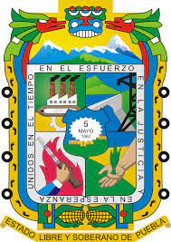

Situación:
El Estado de Puebla si cuenta con una guía estatal propia para elaborar estudios de riesgo
ambiental.
| Fecha de emisión | Contenido |
|---|---|
| 2016 |
|
| Identificación de peligros | Identificación de escenarios. | Jerarquización de riesgos | ||||||||
|---|---|---|---|---|---|---|---|---|---|---|
| AHA | What If | Check List | PHA | FMEA | Árbol de fallos | Árbol de eventos | HAZOP | Índice Dow | Índice Mond | Matriz de Jerarquización |
| X | X | X | X | |||||||
| Zona de Riesgo | Zona de Amortiguamiento | ||||
|---|---|---|---|---|---|
| Incendio | Explosión | Toxicidad | Incendio | Explosión | Toxicidad |
| 5 KW/m2 | 1.0 lb/plg2 | IDLH | 1.4 KW/m2 | 0.5 lb/plg2 | TLV 8 o TLV 15 |